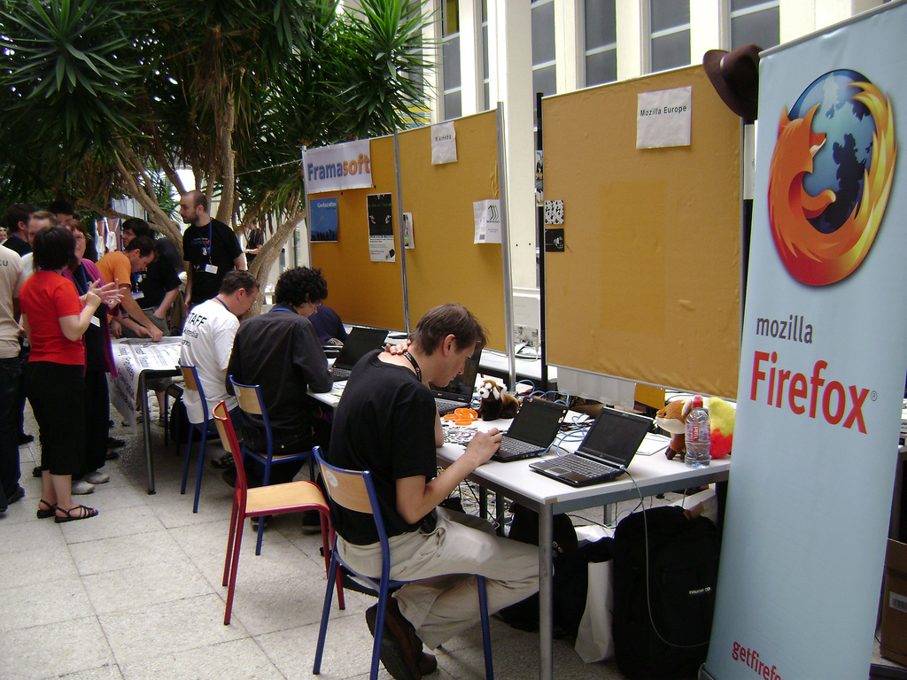

7 juillet 2009
En direct des RMLL à Nantes !
Juste pour dire que je suis en ce moment même aux Rencontres Mondiales du Logiciel Libre à Nantes ;)
Vous pouvez suivre l'événement sur mon Twitter et les photos sur mon compte Flickr (photos réutilisables en licence Creative Commons).
[caption id="attachment_385" align="aligncenter" width="430" caption="Le stand Mozilla Europe"] 
Commentaires 1